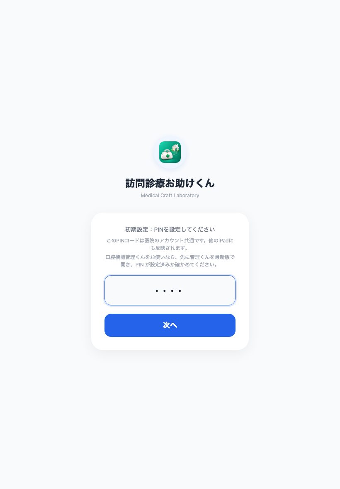
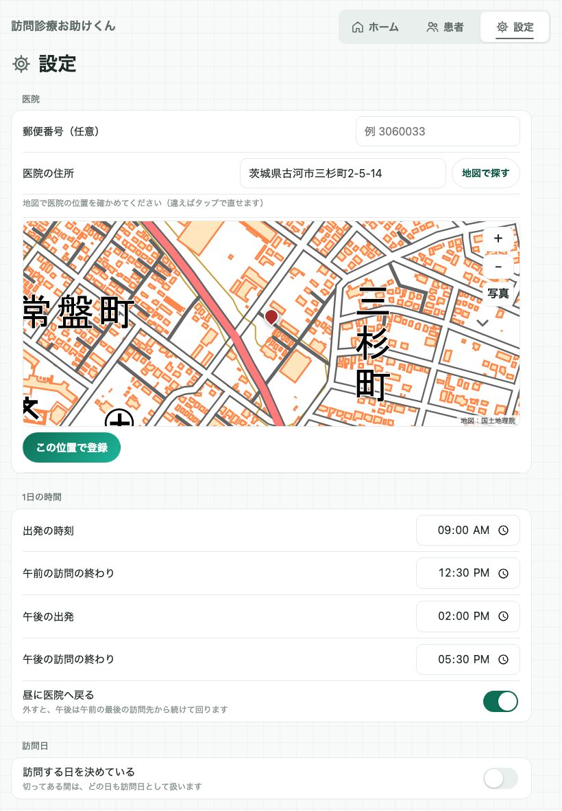
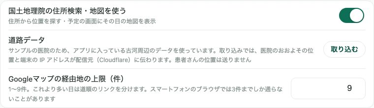
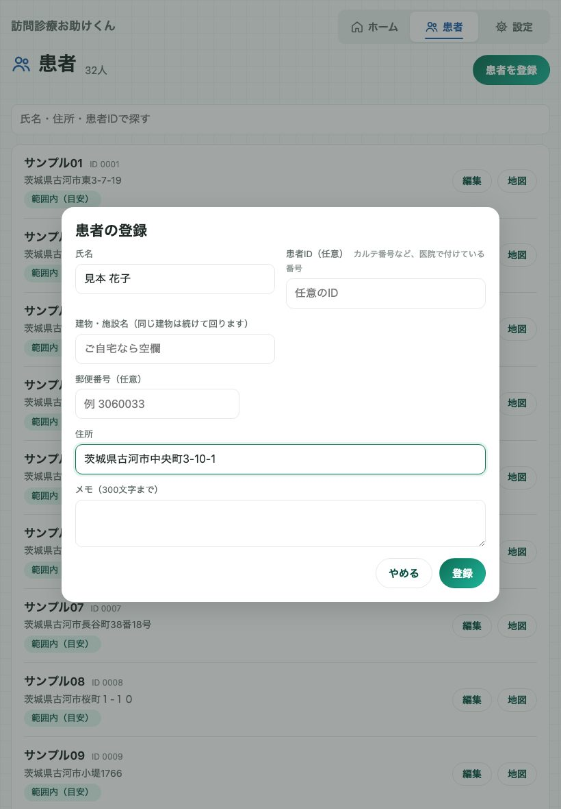
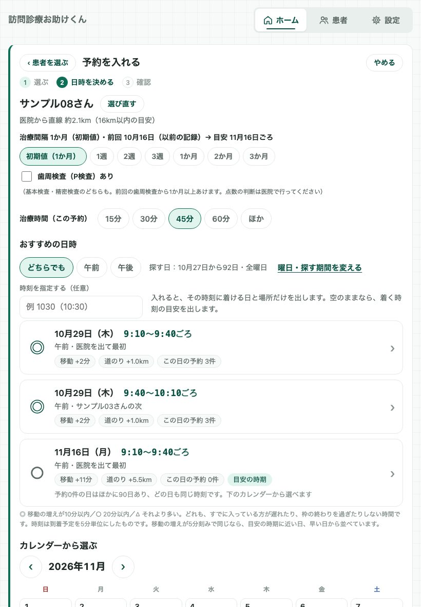
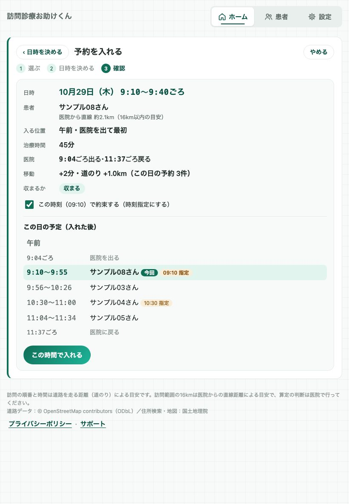
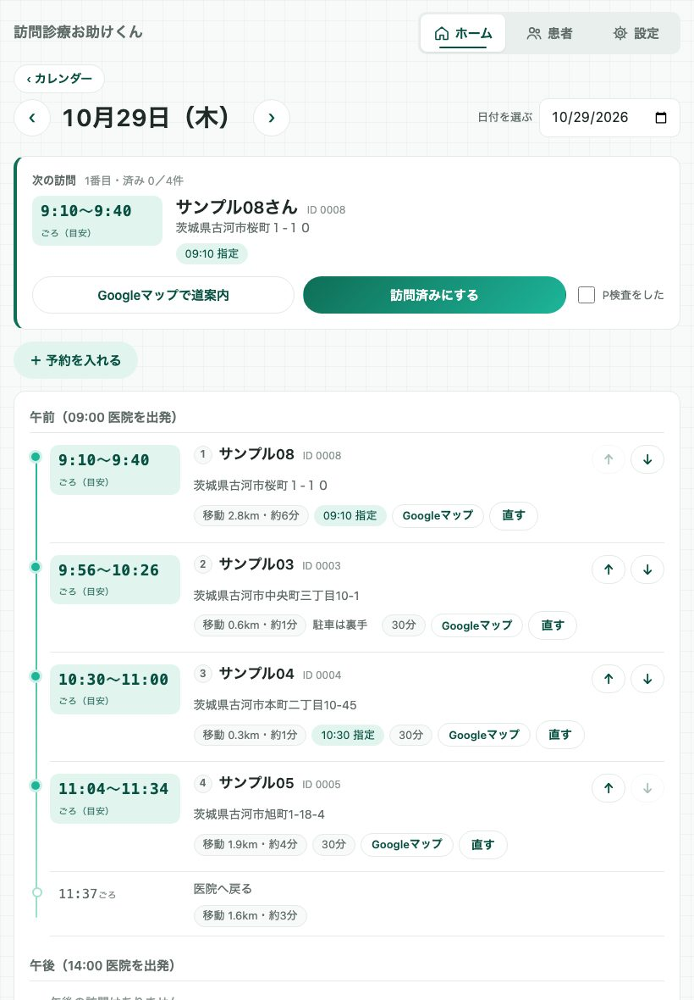
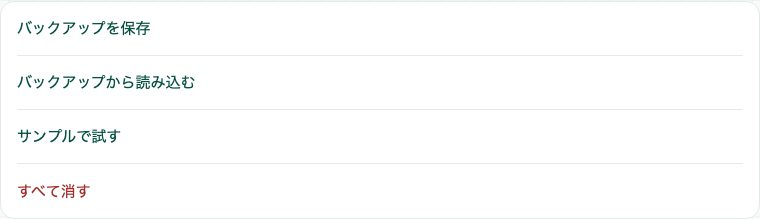

GUIDE — はじめての使い方
訪問診療お助けくんの使い方──医院の登録から、予約を入れて訪問を回るまで
訪問診療お助けくんを入れたあと、「最初に何をすればいいか」を、実際の画面で順番に説明します。医院を登録して患者さんを入れ、予約を入れて、その日の順番どおりに訪問を回るまでの流れです。
このページの画面は、バージョン 1.0（ビルド37） を iPad と同じ画面の幅で表示した説明用のものです（実機では、サインインのボタンなど一部の見た目が違います）。患者さんは「サンプル01」などの架空の方で、住所も説明用です。iPhone でも手順は同じで、画面の並びが少し違うだけです。
POINTS — 先に知っておくと迷わないこと
- アカウントと PIN は口腔機能管理くん・歯科サブカルテ&コンサルくんと共通です。医院で1つのアカウントを、すべての端末で使います
- 最初に「設定」で医院の位置を登録します。医院の周りの道路データは、そのあと自動で取り込みます
- 予約は「＋ 予約を入れる」から。患者さんを選ぶと、移動の増えが少ない日時が ◎○△ で並びます
- 順番はアプリが勝手に変えません。並べ替えの提案は、今の順番と見比べてから「この順にする」で決めます
- 到着時刻は目安です（渋滞などは反映しません）。点数・算定の判断は医院で行ってください
STEP 1サインインして、医院の PIN を決める
アプリを開くと、サインインの画面が出ます。Appleでサインイン か Googleでサインイン を押します。医院で1つのアカウントを決めて、すべての端末で同じアカウントを使ってください。口腔機能管理くんや歯科サブカルテ&コンサルくんをお使いなら、そのアカウントでサインインします。
初めてのアカウントでは、医院の PIN（4〜8桁の数字）を決める画面になります。数字を入れて 次へ を押し、もう一度同じ数字を入れます。PIN はアプリを開くたびに入れる鍵で、医院のアカウント共通です。口腔機能管理くんで PIN を決めてあるアカウントなら、新しく決めずに、その PIN を入れます。

まず試してみたいときは、「設定」の サンプルで試す で、架空の医院と患者さん32人を入れられます。今の登録内容はサンプルに置き換わるので、登録済みのデータがある場合は先にバックアップを保存してください（クラウドと同期している間は使えません）。サンプルの間は、アプリに入っている古河周辺の道路データで動きます。
STEP 2医院の位置を登録する
最初に開くのは「設定」です。医院の住所を入れて 地図で探す を押すと、国土地理院の地図に医院の位置が出ます。違っていれば地図をタップして直し、この位置で登録 を押します。道のりはこの位置から計算するので、入口や駐車場の近くに置いてください。

医院の位置を決めると、医院の周りの道路データを自動で取り込みます（標準の設定で医院の周り約25km・地域により数MB〜約30MB）。取り込んでいる間は画面の上に案内が出ます。取り込みが終わると、その端末では電波のない所でも順番を計算できます。様子は「設定」の「地図」にある 道路データ の行で確かめられます。

道路データは OpenStreetMap をもとにした、車が通れる道のデータで、日本全国で使えます。取り込みのときは、医院のおおよその位置と端末の IP アドレスが配信元（Cloudflare）に伝わります。患者さんの位置は送りません。
STEP 31日の時間と訪問日を決める
同じ「設定」で、出発の時刻・午前の訪問の終わり・午後の出発・午後の訪問の終わりを医院に合わせます。昼に医院へ戻らない医院は「昼に医院へ戻る」を外すと、午後は午前の最後の訪問先から続けて回る計算になります。訪問する曜日が決まっている医院は「訪問する日を決めている」をオンにして曜日を選びます。
あわせて、1件の所要時間（予約で治療時間を選ばなかったときの長さ）、平均の移動速度、訪問範囲（医院からの直線距離・標準は16km）も確かめてください。到着の目安と予約日のおすすめは、これらから計算します。
STEP 4患者さんを登録する
「患者」の画面の 患者を登録 を押します。氏名と住所を入れて 登録 を押すと、住所から位置を探します。番地まで一致し、訪問範囲の境目付近でなければ、そのまま登録されます。それ以外のときは地図が出るので、位置を確かめて登録します（「国土地理院の住所検索・地図を使う」を切ってあるときは、位置未設定のまま登録され、あとで地図で置きます）。

建物・施設名を入れておくと、順番の比較（STEP 7）で、同じ建物の方を同じ午前・午後の中で続けて回る順番を提案します。iPhone・iPad では 書類から読み取る で、紹介状などの書類の写真から住所を読み取ることもできます（読み取りは端末の中で行います）。
STEP 5予約を入れる（おすすめの日時を選ぶ）
「ホーム」の ＋ 予約を入れる を押し、患者さんを選びます（名前・住所・患者IDで探せます）。次の画面で、治療間隔（1週〜3か月）とこの予約の治療時間（15・30・45・60分、または「ほか」で5分刻み）を選びます。歯周検査をする予約は（歯科の見本を使っている医院では）「歯周検査（P検査）あり」を付けると、前回の歯周検査から1か月未満の日に ⚠ の印が出ます（入れることはできます）。基準にするのは、済みになった前回の歯周検査です（まだ無いときは、先に入っている歯周検査の予約を基準にすることがあります）。

おすすめの日時は、すでに入っている方の遅れや、午前・午後の枠のはみ出しを増やさない入れ方を計算し、増える移動の時間が少ない順に ◎○△ の印で並べたものです（移動の増えは5分ごとに比べ、同じなら治療間隔の目安に近い日、早い日を先にします）。午前・午後だけにしたいときは上のボタンで、決まった時刻に行きたいときは「時刻を指定する」に入れます（その時刻に着ける日だけが出ます）。下のカレンダーでは、日ごとの予約の件数と印を見ながら日を選べます。
STEP 6確かめて入れる
日時を押すと、確認の画面になります。入る位置・増える移動・医院を出る時刻と戻る時刻（その枠で医院を出入りするとき）に加えて、入れた後のその日の予定が並ぶので、ほかの方の時刻が無理になっていないかを確かめてから この時間で入れる を押します。

おすすめから進むと、「この時刻で約束する（時刻指定にする）」にははじめからチェックが付いています。付けたままなら、その予約は時刻の指定になり、あとで順番を並べ替えても、その時刻に間に合うかを見ながら計算します。時刻を約束しないときは外してください（前の画面で時刻を入れたときは、その時刻の指定で入ります）。
STEP 7その日の順番どおりに回る
カレンダーで日を押すと、その日の予定が開きます。午前・午後ごとに、訪問の順番・到着の目安・移動の道のりが並びます。同じ午前・午後の中では、↑↓ で順番を入れ替えられ、入れ替えるとすぐに時刻を計算し直します。

※「P検査」の欄は、設定で歯科の見本を使っているときに出ます（医科の見本では出ません）。
訪問の日は、上の「次の訪問」から Googleマップで道案内 を開きます。終わったら、カードの名前を確かめてから、歯周検査をしたときは「P検査をした」のチェックを確かめ（予約で「P検査あり」にした方は付いています。しなかったときは外します）、最後に 訪問済みにする を押します。押すと、カードは次の方に切り替わります。
下の もっと見る には、その日の合計・順番の比較・地図・時刻とメモ・印刷があります。順番の比較は、今の順番と提案された順番を並べて見せるだけで、「この順にする」を押すまで順番は変わりません。遅れやはみ出しを減らすために、距離が少し延びる順になることもあります。同じ建物・施設名の方は、同じ午前・午後の中で続けて回る順番を提案します。
2台目の端末とバックアップ
2台目以降の端末では、最初の端末と同じアカウントでサインインし、同じ PIN を入れます。予定はクラウドを通して端末どうしで同期されます（クラウドには端末で暗号化してから送ります）。道路データは端末ごとに取り込みます。
端末の故障や機種変更に備えて、ときどき「設定」の バックアップを保存 でファイルを書き出し、医院で保管してください。パスワードを決めると暗号化して保存します（パスワードを忘れると復元できません）。戻すときは バックアップから読み込む を使います。読み込むと、今の登録内容がバックアップの内容に置き換わります。読み込めるのは同じアカウントのバックアップで、クラウドと同期している間は読み込めません。

つまずいたとき（よくある質問）
到着時刻が実際と違います。
到着時刻は、道路の距離（道のり）と設定の「平均の移動速度」から出す目安です。渋滞などの交通状況は反映しません。設定の「平均の移動速度」「1件の所要時間」や、予約ごとの治療時間を、医院の実際に合わせて直してください。
「道路データの取り込み前」「道路データの範囲外」と出ます。
医院の位置を決めると、医院の周りの道路データを自動で取り込みます（標準の設定で約25km・地域により数MB〜約30MB）。取り込みが終わるまでは、予定の一覧と手で並べることはできますが、順番の提案・到着の目安・予約日のおすすめは出ません。「範囲外」は、取り込んだ範囲の外の位置か、道路から離れた位置です。患者さんの位置を地図で確かめてください。
PIN を忘れました。
PIN の入力画面の「PINを忘れた場合」を押し、同じアカウントでサインインし直すと、新しい PIN を決められます。予定や患者さんのデータは消えません。PIN は医院のアカウント共通なので、口腔機能管理くん・歯科サブカルテ&コンサルくんの PIN も新しいものに変わります。
PIN を何度も間違えたら、待つように言われました。
PIN を10回続けて間違えると、30秒の待ち時間が入ります。さらに間違えるたびに待ち時間は長くなります（最長1時間）。正しい PIN を入れると元に戻ります。
2台目の iPad や iPhone でも使えますか？
使えます。最初の端末と同じアカウント（Apple または Google）でサインインし、同じ PIN を入れると、同じ予定を見られます。予定は端末で暗号化してからクラウドに送り、端末どうしで同期します。同じ予定を2台で同時に直したときは、どちらの内容も消さずに残し、設定の「別の iPad の変更と重なったもの」から選べます。
電波のない所でも使えますか？
使えます。初めのサインインと PIN の確認を済ませ、道路データを取り込んだ端末では、予定の確認・入力・順番の計算は端末の中で動きます。電波のない間に入れた予定は、つながったときにクラウドへ送られます。住所から位置を探す・地図を表示する・端末どうしの同期には、通信が必要です。
点数や算定の判断はしてくれますか？
いいえ。歯周検査（P検査）から1か月の印などは、日付からの目安です。点数・算定の判断は医院で行ってください。本アプリは医療機器ではなく、電子カルテ・レセコンとの連携もありません。
わからないことは、サポートページのよくある質問をご覧いただくか、アプリの「ご意見・ご要望」からお送りください。
このページは、アプリのバージョン 1.0（ビルド37）（2026年10月時点）の画面と動作をもとに書いています。画面の文言や配置は、今後のアップデートで変わることがあります。患者さんの名前と住所は説明用の架空のものです。